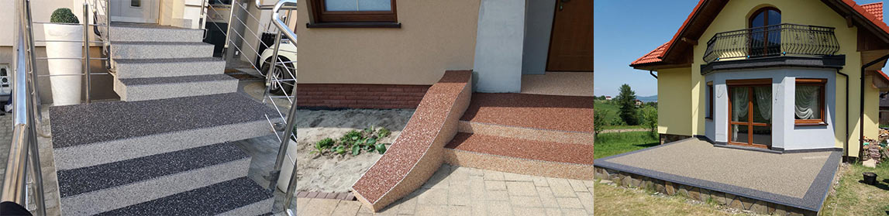
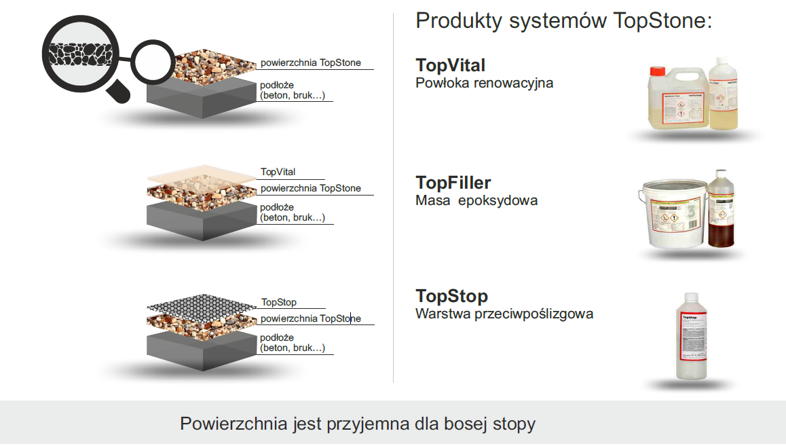
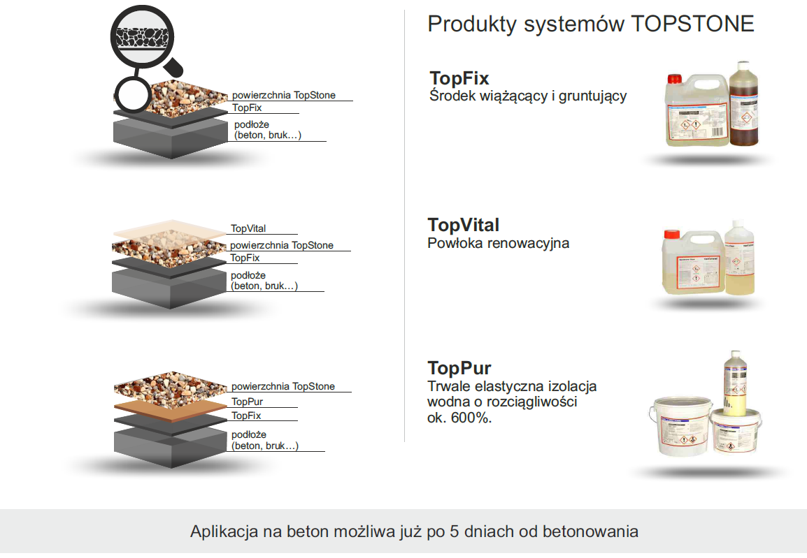
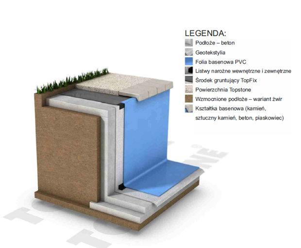
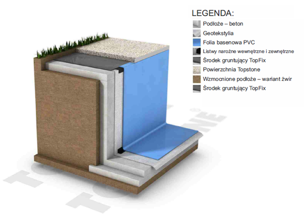
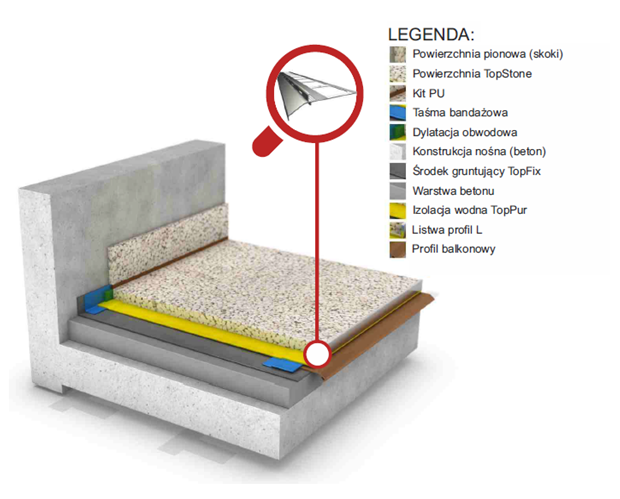
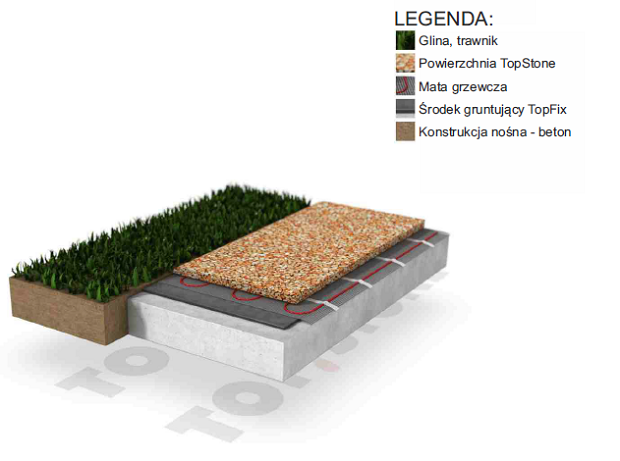
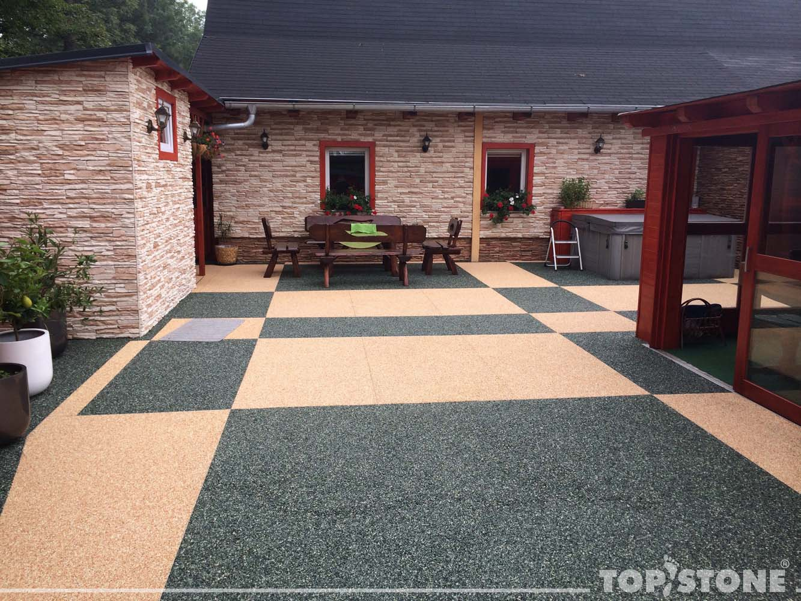

Systemy zewnętrzne

Kamienny Dywan Topstone
System wewnętrzny składa się z unikalnej mieszanki spoiwa żywicznego EpoStone Clear oraz naturalnych kamieni marmurowych lub rzecznych. Jest to nowoczesny materiał budowlany wykorzystywany nie tylko na zewnątrz, ale również wewnątrz pomieszczeń na podłogach, schodach i ścianach. Wyjątkowy wygląd takich powierzchni już na pierwszy rzut oka przykuje uwagę swoją oryginalnością. Istnieje możliwość zastosowania różnych wariantów kolorystycznych oraz gotowych elementów. Dzięki odpowiednim dodatkom można stworzyć całkowicie nowy, interesujący design. Wykonane powierzchnie odznaczają się nowoczesnym i naturalnym wyglądem. Wyróżniaja się prostą i szybką realizacją, dobrym przewodnictwem cieplnym (ogrzewanie podłogowe), są przeciwpoślizgowe i łatwe w utrzymaniu czystości. Posiadają wysoką wytrzymałość mechaniczną i odznaczają się długą żywotnością. Powierzchnia jest przyjazna dla środowiska naturalnego, nie zawiera nonylofenoli i substancji szkodliwych dla zdrowia.
Właściwości powierzchni TOPSTONE
-Funkcjonuje tak samo jak dywan. Cząsteczki kurzu nie przylegają do struktury, co wpływa na mniejsze zabrudzenie
-Powierzchnia drenażowa bez spoin
-Zdolność przepuszczania wody
-Wykończenie i gotowa powierzchnia w jednym kroku
-naturalny wygląd
Zastosowanie:
- baseny, tarsay, balkony
- schody, chodniki
- wjazdy, drogi dojazdowe
Wykonanie
APLIKACJA BEZ GRUNTOWANIA
Na nowy beton od 28 dni do 12 miesięcy od betonowania. Podłoże betonowe posiada parametry wytrzymałościowe (klasa wytrzymałości betonu C16/20) określone w normie oraz zakończony proces pełzania objętościowego. Ważne jest aby podłoże nie było skorodowane.
- Podkład należy przygotować za pomocą szlifowania i dokładnego oczyszczenia czyli usunięcia tzw. „mleczka cementowego”.
- Po wykonaniu niniejszych czynności można przystąpić do aplikacji.
- Betony starsze niż 1 rok lub zdegradowane o dużej porowatości należy koniecznie zagruntować.
- Przygotowanie podłoża, usunięcie niespójnych części, szlifowanie z oczyszczeniem, naprawa pęknięć za pomocą masy szpachlującej TopFiller.
- Wykonanie powierzchni Kamiennych Dywanów.

APLIKACJA Z GRUNTOWANIEM
Powierzchnia TopStone nadaje się zarówno na świeżo położony i niedojrzały beton (5-28 dni po betonowaniu) jak i również na betony starsze (powyżej 12 miesięcy od betonowania).
- Przygotowanie podłoża.
- Usunięcie niespójnych części.
- Szlifowanie z oczyszczeniem podłoża.
- Naprawa pęknięć za pomocą masy szpachlującej TopFiller.
- Aplikacja środka gruntującego TopFix.
- Wykonanie powierzchni Kamiennych Dywanów.

Powierzchnia i połączenie z obrzeżem basenowym z kształtek

Zastosowanie: baseny z wykończeniem z kształtek krawędziowych (kamień, sztuczny kamień, beton, płytki, piaskowiec).Zalety: dopasowanie kolorystyczne powierzchni i kształtek, szybkie wykonanie, wybór grub. powierzchni w zależności od wysokości kształtki. Możliwość ułożenia powierzchni Topstone poniżej poziomu wysokości kształtki.
Zakończenie powiechni TOPSTONE na krawedzi basenu

Zastosowanie: baseny z folii PCV, betonu lub tworzywa sztucznego z wykończeniem na wysokości podłoża betonowego (chodnika). Pełne zakotwienie listwy w przypadku zachowania pochyłości betonu w kierunku od krawędzi basenu. Zalety: szybkie wykonanie, zachowanie płaszczyzny powierzchni Topstone na krawędzi basenu za pomocą listwy wykończeniowej.
Balkon

Zastosowanie: balkony, loggie, tarasy wykończone profilem okapowym z funkcją drenażową. Zalety: odprowadzenie wody z krawędzi balkonu lub tarasu szybkie wykonanie.
Wypust podłogowy - remont lub naprawa
Zastosowanie: wpust perforowany zabezpieczający odpływ wody po ułożeniu podłoża i izolacji TopPur. Podłoże pochylone w kierunku wpustu, zastosowanie w przypadku rekonstrukcji podłogi.
Powierzchnia z podgrzewaniem

Zastosowanie: chodniki, drogi dojazdowe, możliwość zastosowania w miejscach publicznych oraz miejscach, które muszą spełniać bardziej rygorystyczne wymagania dotyczące bezpieczeństwa poruszania się osób. Zalety: szybkie wykonanie, w okresie zimowym powierzchnia nie zamarza, brak konieczności odśnieżania.
